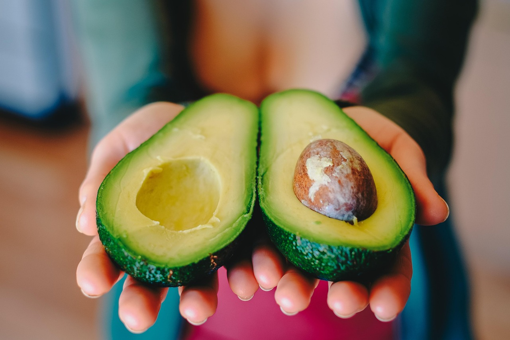
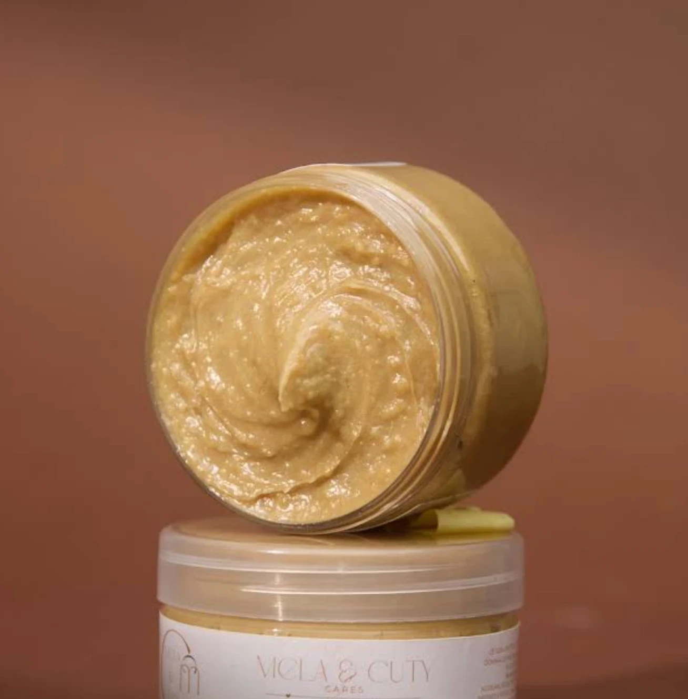

Nous sommes les cueilleurs et planteurs de nos matières premières.
Tout commence dans nos propres plantations, en Côte d'Ivoire. Nous choisissons nos matières premières dès la terre, pour garder la main sur chaque étape qui suit.
Un ancrage local, pensé pour durer.

Récoltées de nos propres mains, au bon moment, nos matières premières conservent ce qui fait leur richesse avant même d'entrer en production.
Pressées à froid, sans chaleur, nos matières premières gardent ce qui les rend précieuses — un choix exigeant, mais celui de la qualité.

Dans nos propres usines, chaque produit prend forme. Nous avons un contrôle total sur nos produits, de la plantation jusqu'au flacon.
« Nous avons un contrôle total sur nos produits. »
Dans notre univers, nous préférons nos propres mots pour parler de vos cheveux.
Des boucles fines et serrées, qui demandent douceur et hydratation régulière pour révéler leur définition.
Des boucles plus larges et denses, qui gagnent en éclat avec des soins nourrissants et un bon scellage.